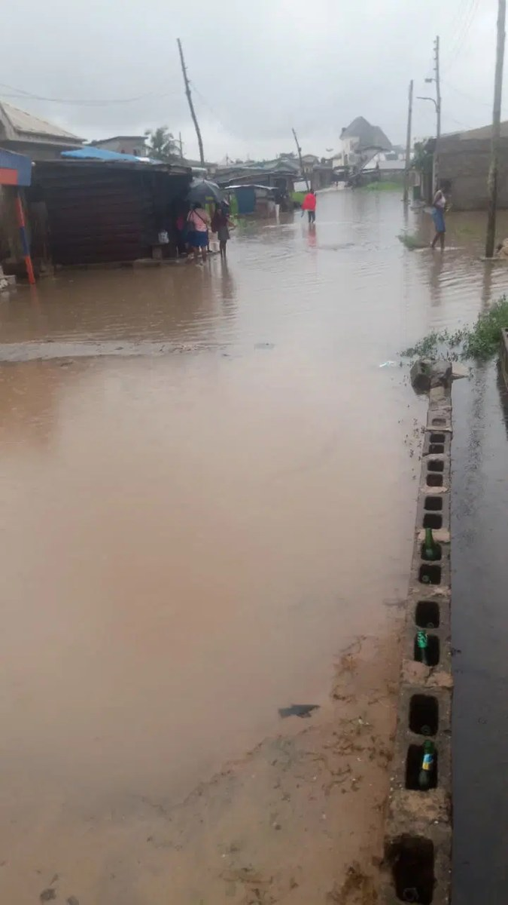

I was soaked for hours before help came — 74-year-old blind man whose home was wrecked by wind storms

A rainstorm damaged the home of 74-year-old Stephen Ogbo in Ugbo Ezeji, D-Line, Abakpa Nike, in Enugu metropolis, leaving him trapped in the wreckage and soaked for hours. Blind and unable to find his way out, he was eventually led to safety by a female tenant whose name he does not know.
Ogbo said the woman found him after several hours and guided him out of the damaged building, then looked for somewhere he could shelter. He had lived in the compound for about eight years. The storm also affected the other residents: the building housed 23 families, and its roof was torn off while tenants’ belongings were damaged.
Mrs. Promise Ugochukwu, a resident and woman leader in the area, said the storm struck between 9pm and 10pm. She described the damage as devastating, saying rainwater ruined household belongings. Residents appealed for assistance as they faced the task of repairing their homes and replacing what had been lost.
Reconstruction has begun after Chief Kingsley Chizoba Nweke, the Peoples Democratic Party senatorial candidate for Enugu East, visited the residents. He said he had seen a video of their appeal and was moved to help. According to Nweke, building materials had been purchased and contractors mobilised to reinforce the structures and replace the damaged roofs so residents could return.
Nweke said the assistance was humanitarian rather than political, and that he would have helped regardless of the residents’ party affiliations. Ogbo thanked him for the intervention. For the affected families, rebuilding offers a first step toward restoring their homes; Ogbo’s escape also depended on the unnamed tenant who helped him through the storm’s aftermath.
Source: Vanguard